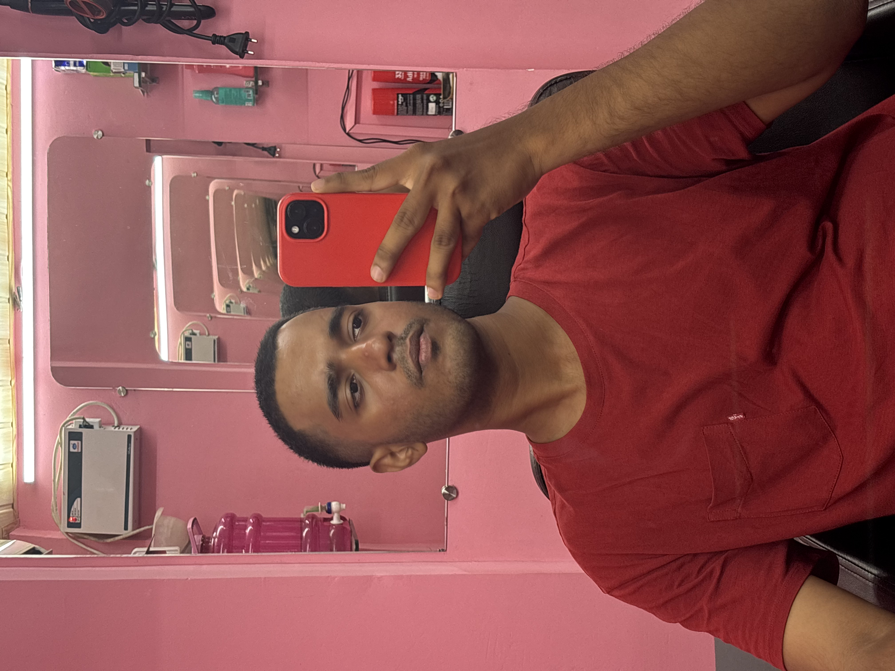

Here's a thought - computers are incredibly cool. And they can understand us now. They should be potent tools to help us stay present, understand ourselves, and self-actualize. But they're kind of the opposite nowadays.
Computers have turned into these glassy black slabs we all have love hate relationships with. There was a time advancements in computing were met with joy and excitement. I want to take us back there. To make computers, hardware and software, that are fun, colorful, and help us become the person we want to be.
In other news, I'm a big fan of this life thing we all find ourselves in. In my free time you'll find me playing the piano, teaching myself guitar, making art, doing origami, writing, making videos, and staring at trees.